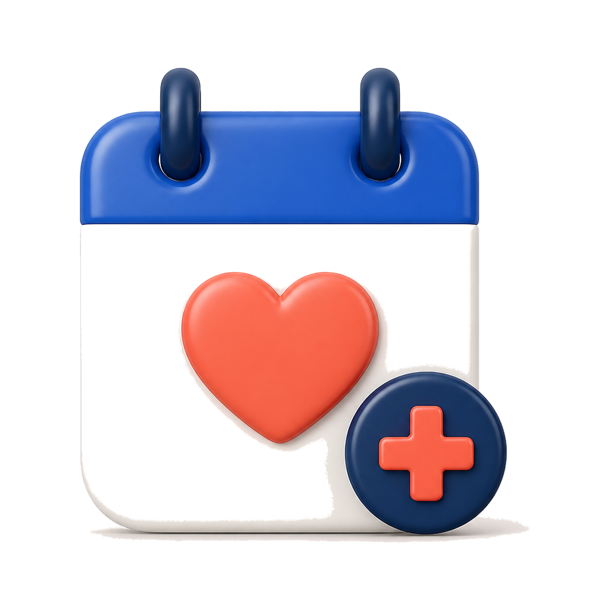
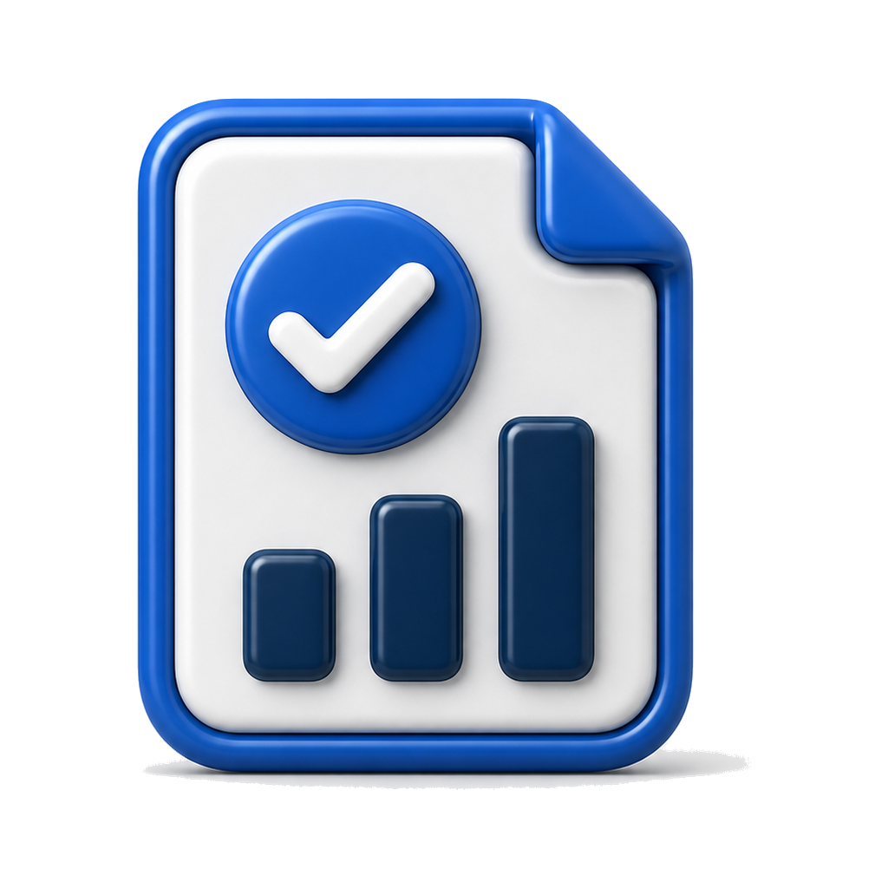
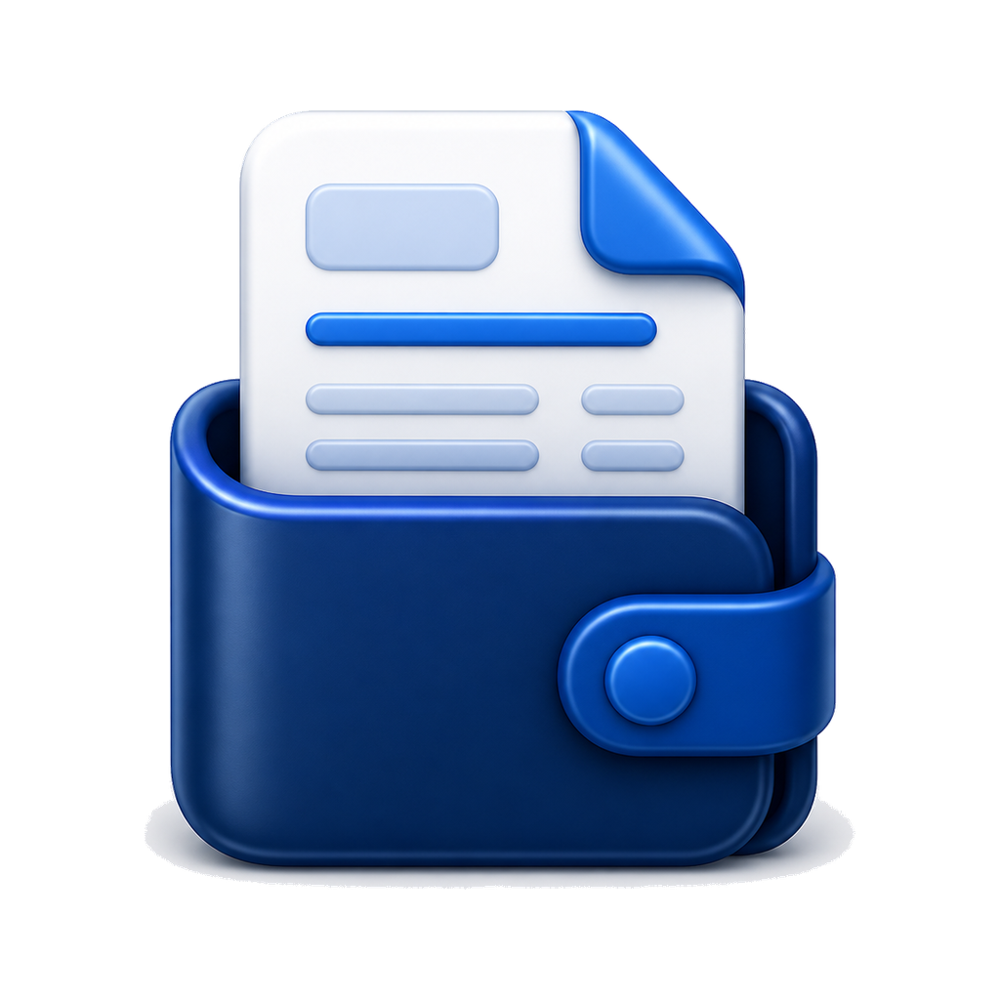
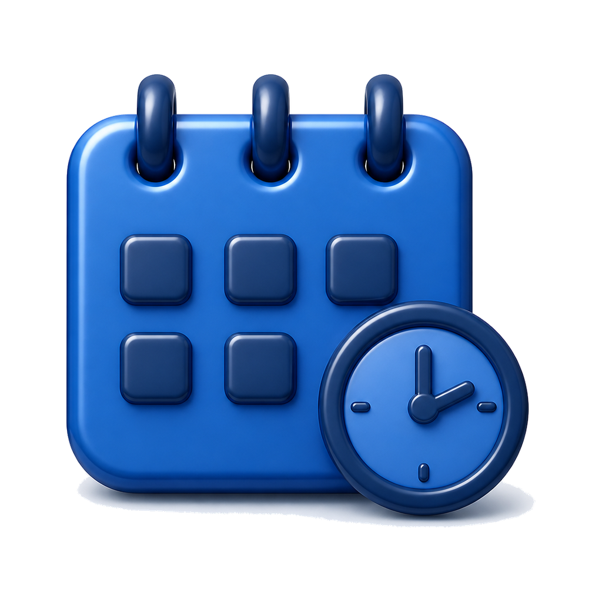

Djiwa Soft iOS
Design system untuk semua aplikasi Djiwa Tentram. Spesifikasi: DJIWA_DESIGN_SYSTEM.md · kode: packages/yumipos-web-shared/src/ds.css. Setiap contoh di bawah memakai kelas ds-* yang sama dengan produksi.
Warna
Navy
#0f2347 · aksi
#0f2347 · aksi
Biru
#1a5dc6 · aktif
#1a5dc6 · aktif
Biru lembut
#e6efff
#e6efff
Langit
#cfe0ff→#f6f7fb
#cfe0ff→#f6f7fb
Grup
#f1f3f8
#f1f3f8
Kanvas
#f6f7fb
#f6f7fb
OK
#13804a
#13804a
Perhatian
#a05d00
#a05d00
Bahaya
#d23a2a
#d23a2a
Komponen
Angka utama + hero
Gaji berjalan · Nov
Rp580.000
9 shift · bonus hari ini +Rp40.000
Shift Pagi · masuk 07:36
03:44:03
Group + row + ikon 3D

Izin / Cuti / Sakit1 pengajuan menunggu
Menunggu
Rekap absensi9 hadir · 1 telat
96%
Slip gaji OktoberDikirim 1 Nov
BaruTile · progres · catatan
9Shift
96%Hadir
Rp90rbTunjangan
🔒
PIN default masih aktif
Ganti agar akunmu aman.
Ganti agar akunmu aman.
Tombol · segmented · chip · tag
Semua Gaji Izin
Netral OK Perhatian Bahaya Info
Tab bar melayang + sheet
Beranda
Rp580.000

Shift Pagi07:00 – 15:00
Latar
Ganti PIN
PIN dipakai untuk absen.